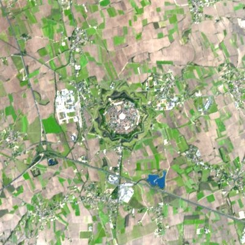
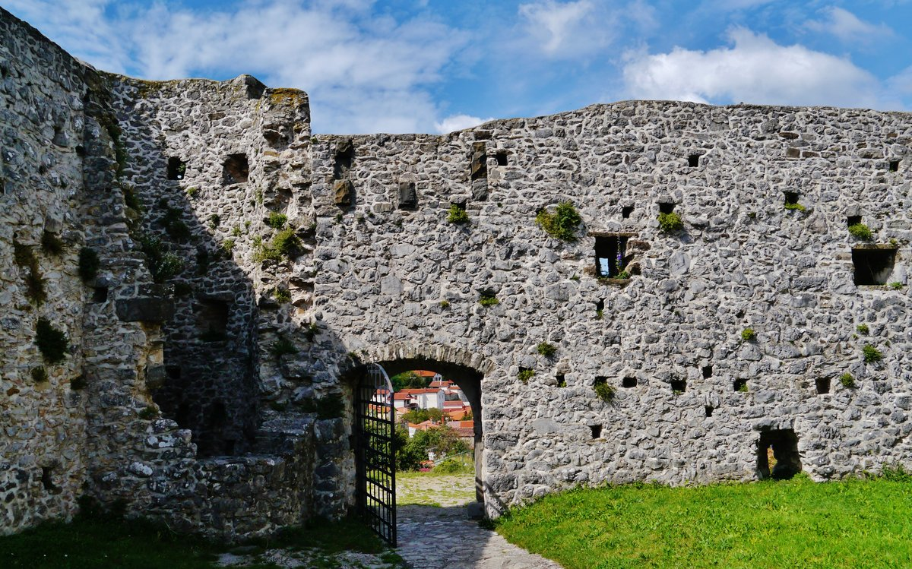
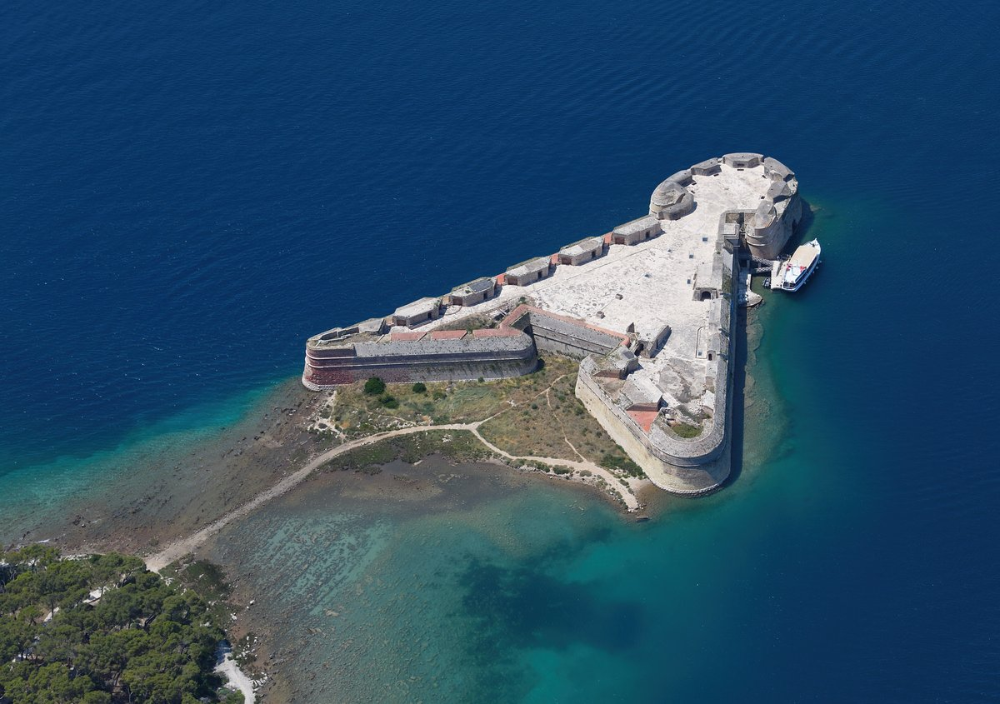
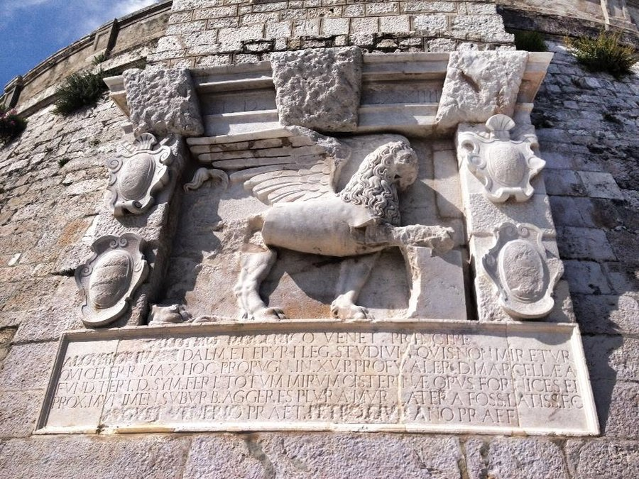
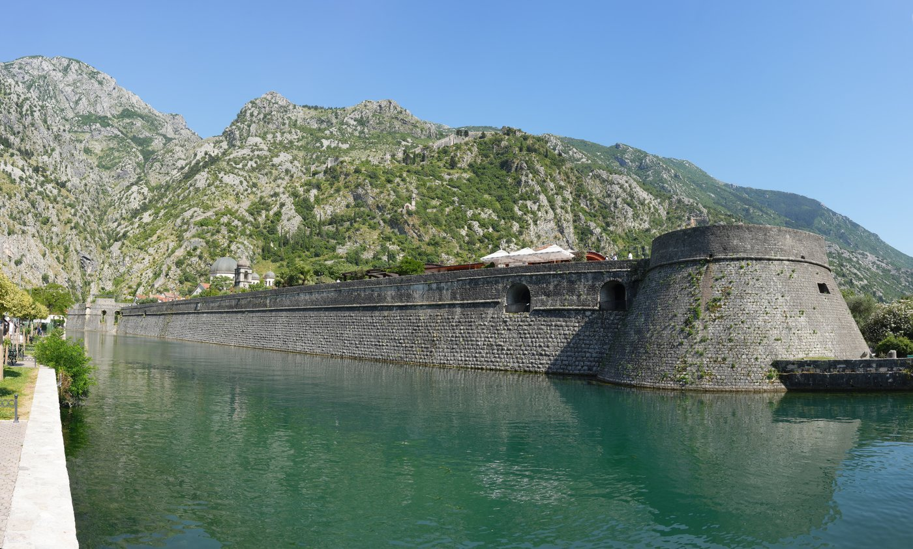
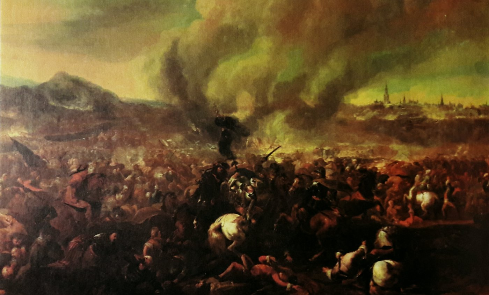
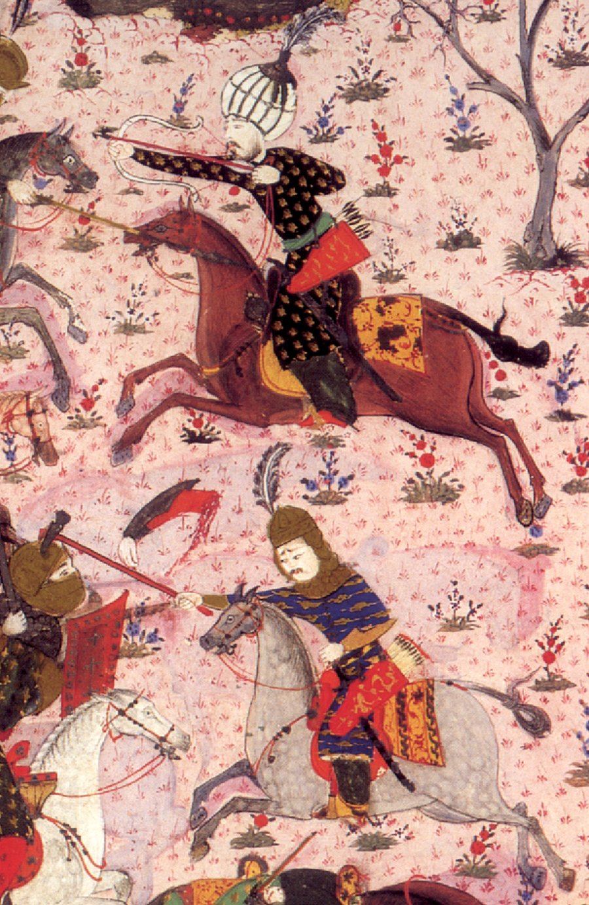

TIMELINE
鄂圖曼擴張兩百五十年
從君士坦丁堡陷落到維也納城下撤退，鄂圖曼的勢力線始終沒有真正跨過這條路線——但每一次逼近，都讓威尼斯與哈布斯堡更用力地把邊境蓋成石頭。
1453
鄂圖曼攻陷君士坦丁堡，拜占庭帝國滅亡，鄂圖曼帝國進入全盛擴張期。
1459
塞爾維亞併入鄂圖曼版圖。
1463
波士尼亞陷落，開啟長達四百餘年的鄂圖曼統治——這也是波士尼亞至今仍有大量清真寺與土耳其式石橋的原因。
1470s–1490s
鄂圖曼輕騎兵（akıncı）開始頻繁翻越邊境，深入弗留利與卡尼奧拉（今斯洛維尼亞）突襲，燒殺擄掠、劫走人口，但從未在此建立統治——這是純粹的恐怖突襲，不是征服。
1482
赫塞哥維納併入鄂圖曼版圖。
1493
克爾巴瓦平原之役（Battle of Krbava Field），克羅埃西亞－匈牙利聯軍慘敗，克羅埃西亞內陸門戶洞開，此後逐步淪陷，只剩薩格勒布周邊「殘存中的殘存」（reliquiae reliquiarum）未被拿下。
1499
鄂圖曼騎兵史上最深入的一次突襲，一路打到威尼斯潟湖邊緣，據說能望見聖馬可鐘樓——這是鄂圖曼兵鋒抵達這片土地的最西端，此後再也沒有更深入過。
1529
第一次維也納之圍，鄂圖曼大軍首度兵臨中歐核心，最終因補給線過長而撤退。
1593
威尼斯共和國動工興建帕瑪諾瓦九角星形要塞城——這是對半世紀突襲恐懼最堅硬的建築回應。
1683
第二次維也納之圍，鄂圖曼帝國在中歐擴張的最高水位線；波蘭國王索別斯基率援軍擊潰圍城大軍，此戰之後鄂圖曼再未能深入中歐。
1699
《卡爾洛維茨條約》簽訂，鄂圖曼帝國首次大規模割讓歐洲領土，長達兩百年的退卻自此展開。
MAP COMPARISON
勢力邊界，四個年代的對照
點擊下方按鈕切換年代，看鄂圖曼、威尼斯、哈布斯堡三方勢力如何在這片土地上此消彼長——地圖為示意繪製，用來呈現大致範圍與趨勢，非精確歷史測繪。
鄂圖曼帝國
威尼斯共和國
哈布斯堡領地
未被征服的克羅埃西亞殘部
＊疆界為示意繪製，用來呈現趨勢與規模對照，非精確歷史測繪；1499 年突襲最深入點已於地圖上標出。
DEFENSIVE RELICS
恐懼蓋出來的建築
從義大利到蒙特內哥羅，威尼斯共和國沿著整條亞德里亞海岸線，築起一整條對抗鄂圖曼的防禦網——其中兩座，就在義大利極東行程的路線上。

帕瑪諾瓦 Palmanova
義大利・弗留利 · 主行程 Day 4
1593 年動工
威尼斯共和國打造的完美九角星形要塞城，是對半世紀突襲恐懼最堅硬的回應。UNESCO「威尼斯防禦工事」世界遺產系列的一員，與貝加莫、札達爾、希貝尼克、科托爾同屬一條防線。

拉斯托維耶聖三一教堂
斯洛維尼亞 · 主行程 Day 11
15–16 世紀「tabor」防禦教堂
斯洛維尼亞把這段突襲時期稱為「turški vpadi」（土耳其突襲）。鄉間教堂紛紛加蓋防禦城牆與瞭望孔，村民一聽警報就躲進教堂圍牆避難——拉斯托維耶是保存最完整的一座，你會在牆上親眼看到那些射擊孔。

希貝尼克聖尼可拉堡壘
克羅埃西亞・希貝尼克（不在本次行程）
1540 年代興建
扼守希貝尼克港灣入口的三角形堡壘，由威尼斯派駐工程師設計，同屬「威尼斯防禦工事」世界遺產系列——從空中俯瞰，能清楚看出它如何用最小的接觸面對抗艦砲攻擊。

札達爾城牆・聖馬可飛獅
克羅埃西亞・札達爾（不在本次行程）
威尼斯共和國紋章
城門上這隻展翅的飛獅，正是威尼斯共和國的守護聖人聖馬可的象徵——每一座被威尼斯重新武裝的海岸城市，城牆上幾乎都能找到這隻獅子，等於是威尼斯在說「這裡我們守得住」。

科托爾城牆
蒙特內哥羅・科托爾灣（不在本次行程）
整條防線最南端
城牆沿著陡峭山壁一路攀上聖若望山，長達 4.5 公里，是整條「威尼斯防禦工事」中規模最壯觀的一段——也是這條反鄂圖曼防線的最南端終點。
CODA
圍城的兩端：誰在敲門，敲到了哪裡

1683 維也納之圍
鄂圖曼帝國在中歐擴張的最高水位線，也是它由盛轉衰的轉捩點——此戰之後，退卻持續了整整兩百年。

Akıncı 輕騎兵
16 世紀鄂圖曼手抄本細密畫中的輕騎兵——正是這種來去如風的突襲部隊，讓弗留利與卡尼奧拉花了整整一個世紀蓋防禦工事。